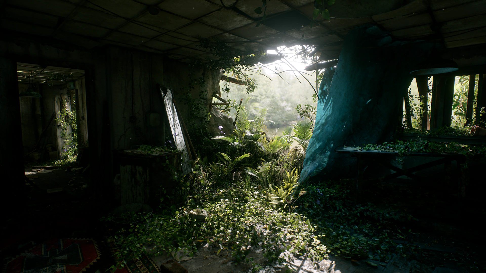
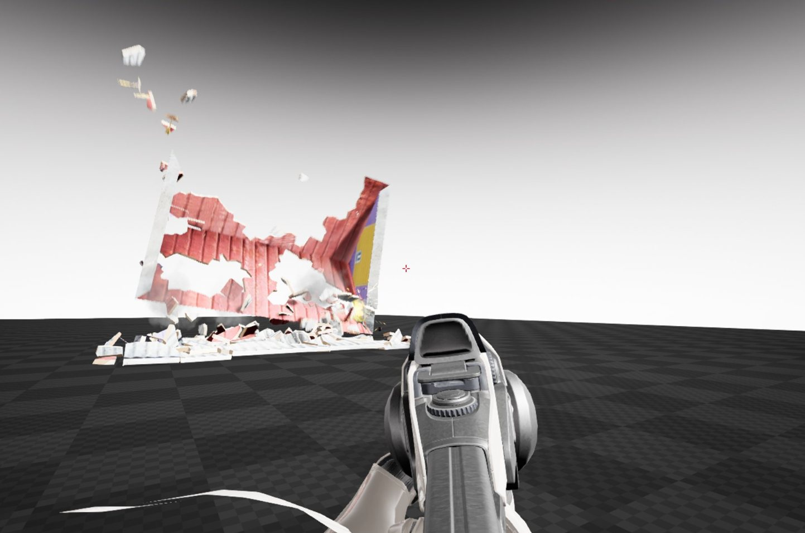
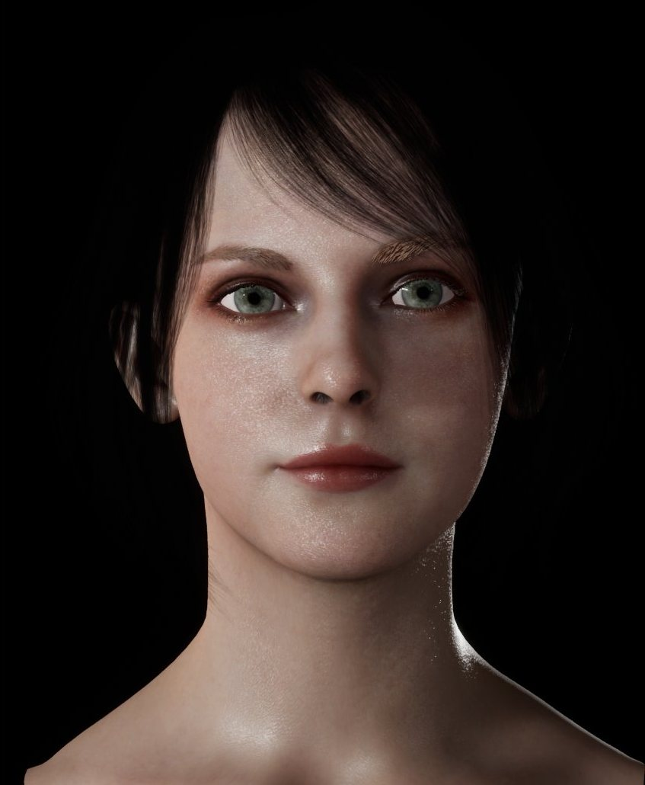
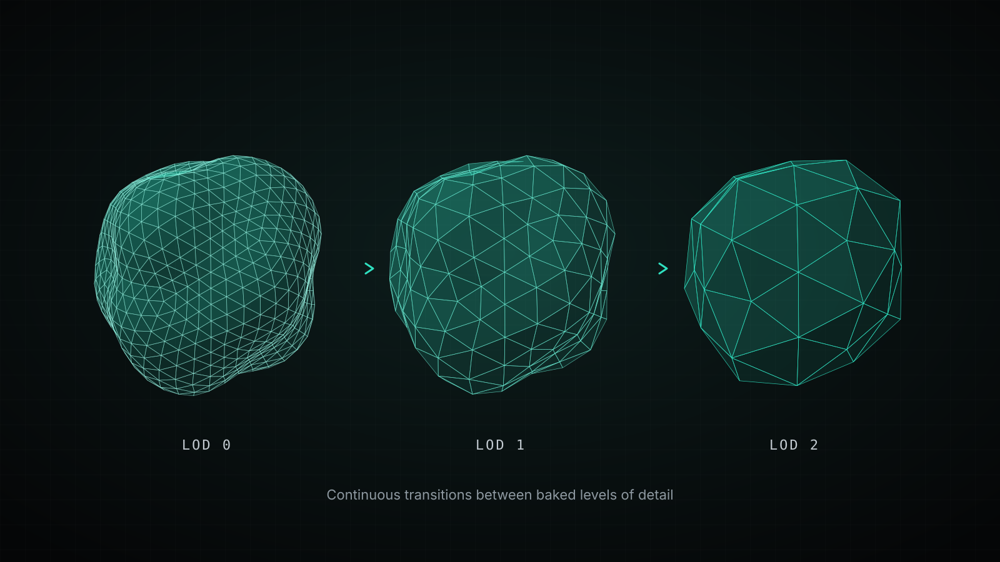

Vite Technology
フレーム予算のために設計された、リアルタイムのレンダリングと物理。
Unreal Engine Vite を支える研究と開発。グローバルイルミネーションとパストレーシング、ゲームに最適化した物理 SDK、キャラクターのシェーディング、ジオメトリ、ヘアを、ゲームが実際に出荷されるハードウェアでネイティブ解像度のまま動かすために作っています。
技術群
5 つの技術。ルールは 1 つ、出荷できること。
どの技術も、実際の製品のエンジンの中で、固定のフレーム予算とコンソールクラスの CPU を前提に開発し、主張する前に計測しています。

グローバルイルミネーション · パストレーシング
Vite ReSTIR
リザーバーによる時空間の再サンプリングを用いたリアルタイムのグローバルイルミネーションと、同じパイプライン上のリアルタイム・パストレーサー。Epic 品質の Lumen より低いコストでのパストレースのライティングを目指して設計しています。
Vite ReSTIR
物理 SDK · CPU と GPU
ViteX Physics
Unreal Engine 4 と完全に互換の物理 SDK。ゲーム向けに調整した PhysX 4 と 5 のソルバーの進歩に、Flex と Flow による GPU で高速化した流体、布、煙を組み合わせます。
ViteX Physics
シェーディング
Vite BRDF
Callisto をベースにした、キャラクター向けの品質の BRDF。2 ローブのスペキュラー、スムーズターミネーター、再帰反射、ディフューズのフレネルを備えます。
Vite BRDF
ジオメトリ
Vite Vertis
標準のメッシュのパイプライン上での、連続的でポップのない LOD。ゲームが出荷されるハードウェアで Nanite を超えるために作っています。
Vite Vertis
ヘア
Vite Hair FX
TressFX をベースにしたストランドのヘア。新しいヘアの BRDF を備え、フレームのコストを大幅に削減します。
Vite Hair FX約束ではなく、計測
エンジンはすでに、置き換える対象を上回っています。
Vite Technology は、すでに使われている性能重視のエンジン、Unreal Engine Vite から生まれました。以下は同じシーンを同じ条件でキャプチャしたもので、計測の方法は エンジンのマニュアル で公開しています。
比較の相手は意図して選んでいます。 レイトレーシングのライティングを使う Vite と、UE 5.7 が想定する機能構成との比較。そして Vite の PhysX と、Chaos および標準の NVIDIA PhysX との比較です。
レイトレーシング GI のシーン（フレーム/秒）
エンジン内で 3,000 ボディをシミュレーション（フレーム/秒）
開発の方針
エンジニアリングの原則
ネイティブ解像度を最優先
画像の鮮明さは真っ先に失われ、最も取り戻しにくいものです。予算は再構築ではなく、ネイティブ解像度を保つことに使います。
固定のフレーム予算
あらゆる機能は、既定で有効にする前に、60 FPS と 120 FPS の目標に対してミリ秒単位でコストを見積もります。
コンソールクラスの CPU
物理とアニメーションのカーネルは、デスクトップの部品ではなく、256 ビットの FMA パイプが 1 本の PS5 クラスのシリコンで計測します。
使う分だけ払う
任意のシステムは既定でコンパイル対象から外します。追加のシェーディングモデルをゲートしただけで、基準シーンは 12.3% 向上しました。
製品で実証済み
機能は、実際のハードウェアでのクック、パッケージ化、出荷を経て残らなければなりません。デモは副産物であり、目的ではありません。
再現できる数値
結果はホスト、ビルド、負荷、スレッド数とともに公開し、鵜呑みにするのではなく検証できるようにしています。
提供状況
現在出荷しているもの、そして次に来るもの
どの技術も、Unreal Engine Vite ですでに出荷しているシステムの上に築かれています。
| 技術 | Unreal Engine Vite で現在出荷しているもの | 状況 |
|---|---|---|
| Vite ReSTIR | 動的 DDGI。ReSTIR のファイナルギャザーを伴うピクセルごとの RT GI、RTXDI、エディタのパストレーサー（任意のビルド） | 開発中 |
| ViteX Physics | Vite の PhysX 3.4、APEX、Blast、固定タイムステップ、インスタンス化ボディ。Flex と Flow は統合中 | 開発中 |
| Vite BRDF | Callisto BRDF のシェーディングモデル | 提供中（実験的） |
| Vite Vertis | 標準のスタティックメッシュの LOD のパイプラインとテッセレーション | 開発中 |
| Vite Hair FX | TressFX 5.0 のストランドのヘア | 開発中 |
Vite と協業する
ライセンス、統合、そして投資。
タイトルへの採用を検討しているスタジオや、ロードマップに関心のあるパートナーは、チームに直接ご連絡ください。すでに出荷しているものはすべて、エンジンのマニュアルで説明しています。